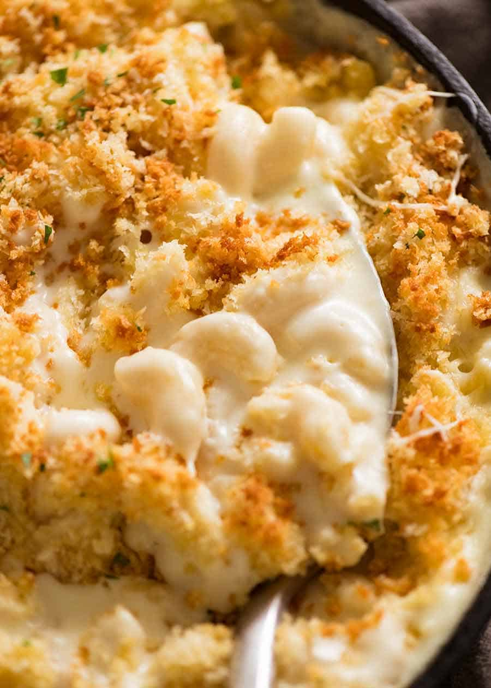

Baked Mac and Cheese

Homemade Cheesy Mac and Cheese
Baked mac and cheese. It’s nearly the universal comfort food, and there are SO many variations! In fact, I almost
didn’t post this recipe, as there are SOOOO many mac and cheese recipes available, and most people already have
their favorite way of making it.
Of course, there’s no “right” way or “wrong” way, so I’m here sharing the way I like to make my mac and cheese
(the way my family loves it too).
Ingredients
- 1 lb. Dried Elbow Pasta
- 1/2 Cup Unsalted Butter
- 1/2 Cup All Purpose Flour
- 1 1/2 Cups Whole Milk
- 2 1/2 Cups Half and Half
- 4 Cups Grated Medium Sharp Cheddar Cheese
- 2 Cups Grated Gruyere Cheese
Steps
- Boil the pasta, drain
- Make the cheese sauce by combining a fat (butter), and starch (flour), then whisking in the milk products
- Cook the sauce until it’s nice and thick
- Add in shredded cheeses, stir well
- Combine cheese sauce with cooked pasta
- Transfer half of the mac and cheese to a baking dish, sprinkle with more shredded cheese
- Top with the rest of the mac and cheese, top with more shredded cheese
- Bake at 375 degrees for 45min and prepare to thoroughly enjoy